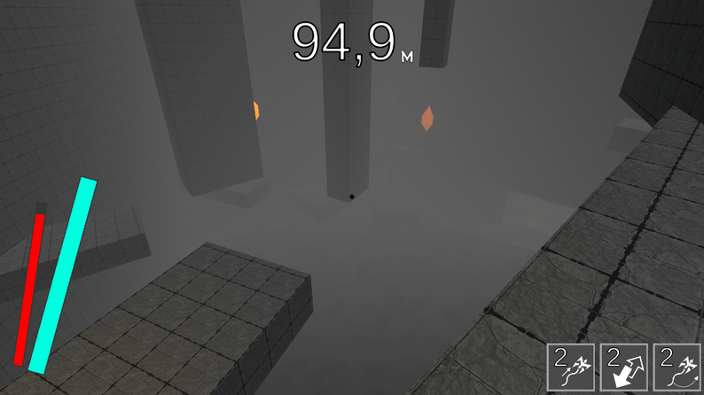

Ludum Dare 57 · Game Jam
AbyssLonging
Top 10%Procedurally generated dungeon game where players descend to lower floors using diverse abilities.
- Role
- Gameplay & Systems Programmer
- Timeline
- 2 days
- Team Size
- Solo

Project highlight
- Used ProBuilder to rapidly prototype 10 playable levels shaped around the player’s movement abilities and traversal constraints.
- Split content into simple and hard tiers; as difficulty ramps, the generator randomly selects the next authored stage from the pool that matches the current difficulty band.
What I built
- Created the dungeon generation logic and progression flow for descending through procedurally structured floors.
- Built a character controller with parkour elements tailored to vertical traversal and this level design style.
- Designed and assembled ProBuilder levels to create a strong sense of massive megastructure spaces.
Challenges
- This was my first game jam, so the key challenge was delivering the full game in two days from initial concept to final itch.io upload.
Results & impact
- Completed playable jam entry with generated dungeon gameplay.
- Reached the top 10% of games in that jam on my first attempt.